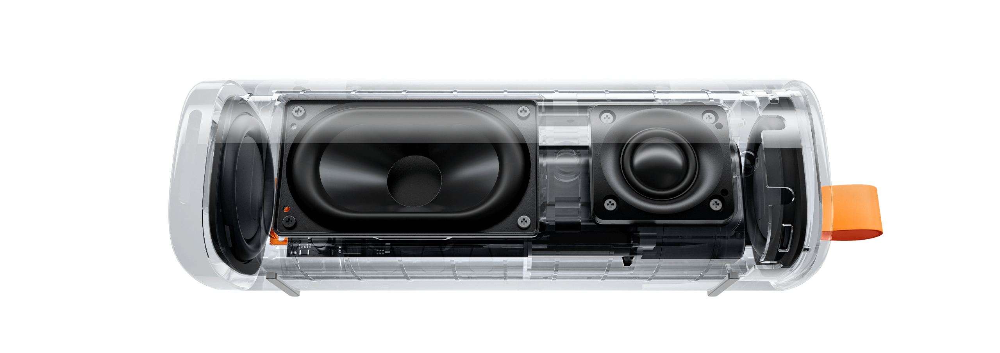

"Vivo" é um conceito de design que pulsa com a própria
essência da vitalidade. Cada elemento é infundido com o ritmo vibrante da vida, criando uma sinfonia visual que dança em
perfeita harmonia com o som.
Experiência sonora imersiva


30W de potência sonora
Portátil e poderoso
Design único com uma ampla área de malha. Essa característica especial permite que o som flua de maneira mais livre e natural, resultando em uma experiência sonora extraordinariamente transparente e equilibrada. Cada detalhe da sua música favorita será revelado com uma clareza cristalina.

Um subwoofer dedicado e dois radiadores passivos de grande porte
Modo exclusivo de aumento de graves
Equipado com dois radiadores passivos de grande porte em ambos os lados, a caixa de som oferece graves mais cheios e ricos para sons de percussão dinâmicos, naturais e energéticos.

Três modos de transparência
Ouça o mundo ao seu redor
Fique atento ao que está acontecendo ao seu redor enquanto aprecia sua música com três modos de transparência.

Até 12 horas de bateria
Seu som sem interrupções
Desfrute de até 12 horas de reprodução contínua com uma carga completa, tornando-o perfeito para festas épicas e piqueniques. Suporta carregamento rápido de 15W tipo C para um prazer mais duradouro.
Cancelamento de ruído com dois microfones baseado em IA para chamadas*
Continue correndo, sem medo do ruído do vento
Com a inteligência artificial Xiaomi, o Redmi Buds 5 pode resistir a ruídos gerados por ventos de 6 m/s*. Os dois microfones trabalham juntos para extrair com eficiência os sons vocais com precisão e filtrar o ruído externo; é como se você estivesse falando com a pessoa cara a cara.

O que há de melhor em som Hi-Fi
Ouça todos os detalhes

Driver ultragrande com diafragma de titânio
Sinta-se como se estivesse ouvindo o som ao vivo
O grande driver dinâmico de 12,4 mm cria uma área de vibração maior e gera batidas mais profundas, enquanto o resistente diafragma revestido de titânio proporciona um desempenho de agudos mais puro. Ouça o rangido das cordas e as respirações entre frases com a acústica profissional que dá vida à música.


Câmara de som independente
Para um palco sonoro amplo
Ao garantir excelente resposta de frequência dinâmica e consistência sonora, a câmara de som independente do Redmi Buds 5 cria uma experiência mais realista e imersiva com camadas distintas de sons de alta, média e baixa frequência.


Balanço de áudio
Ajuste facilmente com quatro configurações de EQ para chegar ao som que você deseja.

Experiência de uso incrível
Confortável em todos os aspectos
Design clássico de fones de ouvido para oferecer um ajuste firme
Um novo toque no design clássico. Otimizado com o uso de modelagem de dados de milhares de modelos de canais auditivos, o Redmi Buds 5 combina ajuste estável com conforto. Com uma distribuição de peso interna e externa de 65:35, o Redmi Buds 5 oferece o melhor ajuste ao seu ouvido.


Iluminação LED suave
Estojo natural e delicado
O estojo de carregamento Redmi Buds 5 apresenta um design delicado e compacto. As luzes LED no estojo são compostas por cinco pequenas esferas que emitem luz suave e natural. As faixas decorativas e brilhantes com nano revestimento dão um toque de elegância ao Redmi Buds 5.


Até 10 horas de uso
Curta músicas sem interrupções
Até 10 horas de bateria, com o uso do estojo de carregamento, a autonomia da bateria pode chegar a até 40 horas* e manter os fones funcionando por todo o tempo que você precisar deles. Com o carregamento rápido, os fones podem reproduzir até duas horas de música após uma carga rápida de apenas cinco minutos*.

Google Fast Pair
Abra a tampa para a pop-up aparecer e simplesmente toque para conectar
Com apenas um toque, o Redmi Buds 5 permite o emparelhamento Bluetooth rápido e sem esforço com seus dispositivos Android*. Você pode até mesmo verificar onde o deixou pela última vez.

Xiaomi Earbuds*
Personalize facilmente seus fones de ouvido
Faça o download do aplicativo Xiaomi Earbuds para ajustar as configurações de cancelamento de ruído e controle de toque dos seus fones de ouvido sem fio Redmi Buds 5. Você está no controle: ajuste as configurações para obter um áudio ideal e instale atualizações de firmware on-line. Há ainda mais recursos para você descobrir.


Atenção em todos os detalhes


Avisos legais:
*As imagens nesta página são apenas para fins ilustrativos e podem não ser representações exatas do produto. Os parâmetros do produto são apenas para referência. Alguns parâmetros do produto podem variar devido a fatores externos, como ambiente e diferenças nos sistemas de smartphones. Consulte o produto real para obter detalhes.
*Os dados de duração da bateria são provenientes do Laboratório Interno da Xiaomi e foram medidos com configurações de volume padrão no modo Bluetooth. A duração real da bateria e os tempos de espera podem variar dependendo de fatores como volume, fontes de áudio, efeitos sonoros, interferência ambiente, funções/modos habilitados e hábitos de uso. Consulte o uso real. O modo Bluetooth entrará no modo de suspensão e a caixa de som será desligada automaticamente quando não houver atividade ou entrada de áudio. Isso ajuda a prolongar o tempo de serviço do produto.
*A Xiaomi Sound Outdoor não é uma caixa de som à prova d'água profissional e oferece apenas recursos básicos de proteção contra respingos e poeira. A eficácia da proteção contra respingos e poeira pode diminuir ao longo do tempo com o desgaste. Não carregue a caixa de som debaixo d'água ou em ambientes úmidos. Danos causados por água não são cobertos pela garantia.
*A combinação estéreo suporta a conexão de duas caixas de som Xiaomi Sound Outdoor para obter uma experiência de som surround. Ela é projetada para reprodução de música. Quando usada para reproduzir vídeos, o áudio e o vídeo podem ficar dessincronizados devido a fatores do dispositivo ou da rede.
*Peso: A Xiaomi Sound Outdoor pesa 597g ± 15g.